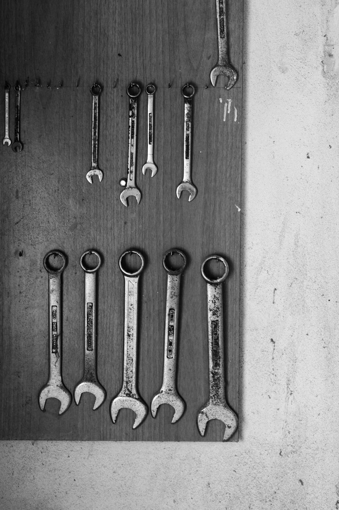
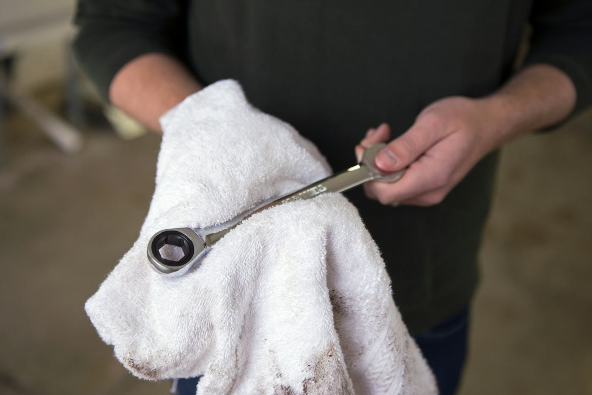
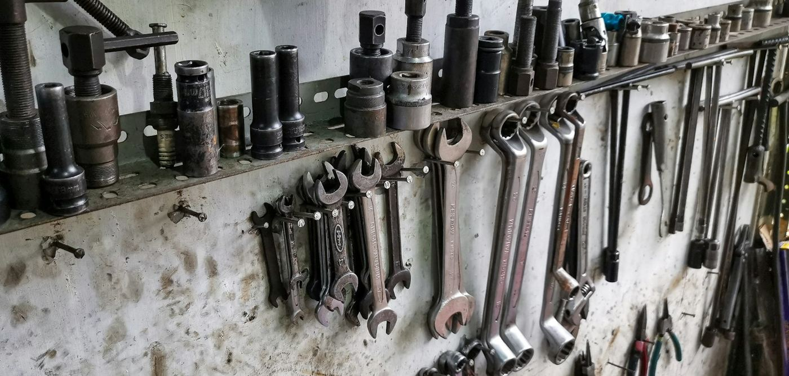

오시는 길
고른시 바퀴로 18 (가상 주소) · 고른역 2번 출구에서 걸어서 9분입니다.
영업시간
| 평일 | 09:00~18:30 | 접수 마감 18:00 · 점심 12:30~13:30 작업 없음 |
|---|---|---|
| 토요일 | 09:00~14:00 | 접수 마감 13:30 |
| 일요일 · 공휴일 | 휴무 | 예약 · 접수 없음 |
- 휴무 10월 31일 (토) 정상 영업 · 11월 1일 (일) 휴무
- 작업 공간 리프트 3대 · 얼라인먼트 1대
- 리프트 1 오일 · 필터 · 배터리
- 리프트 2 브레이크 · 타이어 · 얼라인먼트
- 리프트 3 대형 · SUV 가능 (3.5톤)
약도
- 버스 바퀴로 정류장 하차 · 걸어서 3분
- 지하철 고른역 2번 출구 · 걸어서 9분
- 차 바퀴로 18 · 주유소 다음 건물 1층
기다리는 동안
- 대기실 대기실 8석 · 무선 인터넷 · 정수기
- 대차 대차 2대 (경차 1 · 준중형 1) · 2시간 넘는 작업 · 무료 · 운전면허증 필요
- 주차 정비소 앞 6면 · 작업 대기 차량 우선
- 결제 카드 · 계좌 이체 · 현금 영수증 발행



사이트 안내
- 가상 정비소 고른바퀴 경정비 · 주소 · 전화 · 메일 모두 연습용 가상 값
- 값 · 주기 국내 경정비 시세 대역에서 지어낸 값 · 차량 설명서의 주기 우선
- 입력한 정보 이 브라우저 안에서만 계산 · 예약 번호는 이 탭을 닫으면 사라짐
- 차 실제 차 이름 · 상표 없이 차급으로만 표기
사진 출처 (9장 · Unsplash License)
- 어두운 정비 공장 안 리프트에 올린 차와 열린 보닛 · Unsplash 원본
- 나무판 벽에 두 줄로 걸린 스패너 · Unsplash 원본
- 기름 묻은 벽 선반에 걸린 소켓과 스패너 · Unsplash 원본
- 타이어 접지면 홈 근접 사진 · Unsplash 원본
- 통에서 흘러내리는 엔진오일 · Unsplash 원본
- 주황 장갑을 낀 손으로 엔진 볼트를 푸는 모습 · Unsplash 원본
- 작업 수건 위에 든 라쳇 렌치 · Unsplash 원본
- 바퀴를 뺀 허브와 브레이크 캘리퍼 · 디스크 · Unsplash 원본
- 차체에 달린 구멍 뚫린 브레이크 디스크와 캘리퍼 · Unsplash 원본